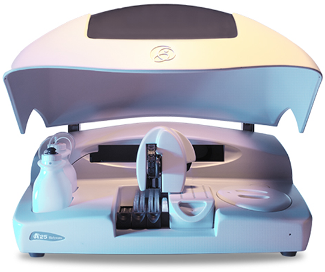
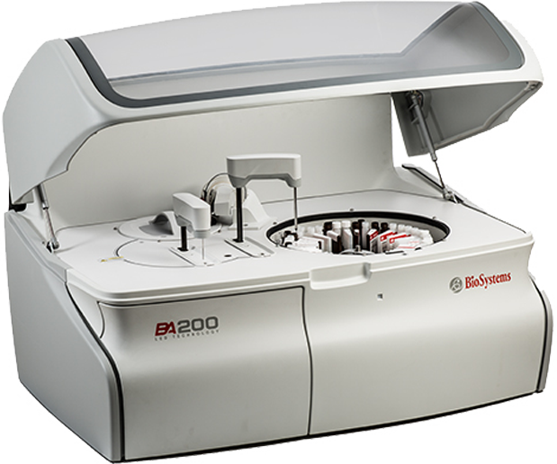
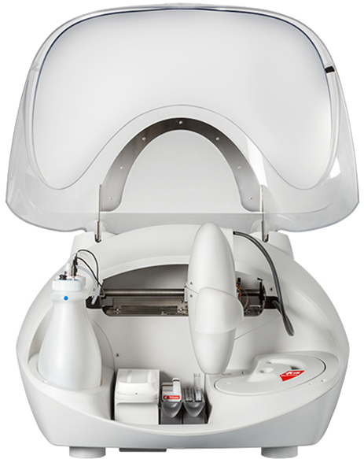
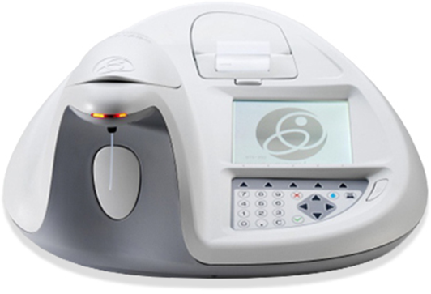
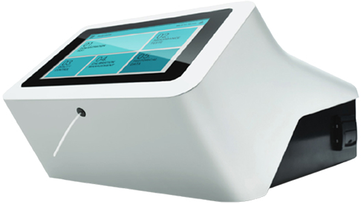
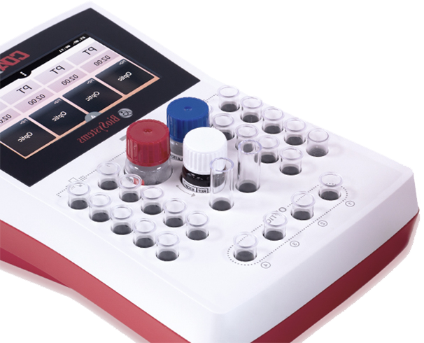

BA 400
Highlights
Spesifikasi Teknis
Kecepatanpembacaan: 400 tes/jam
Kecepatan pembacaan ISE module: 320 tes/jam Prinsip analisis: Kolorimetri, turbidimetri, metode ISE (elektroda ion selektif): Na+ , K+ , Cl- (Li+ sebagai pilihan)
Sampel
Kapasitas sample rotor: 135
Pendeteksi barcode: Ya
Jumlahsampelmenggunakan barcode: 90
Ukuran wadah sampel: Diameter dari 12 mm sampai 16 mm (tinggimencapai 100 mm)
Ukuran pediatrik: Diameter 13,5 mm
Tipe syringe: Pompa piston keramik dengan sedikit perawatan
Diameter piston: 3 mm Volume pemipetan: 2 µL – 40 µL
Resolusipemipetan: 0,1 µL
Perbandinganpengenceran: 1:2 sampai 1:200
Read more...
Reagen
Volume botolreagen: 20 mL, 60 mL
Kapasitasreagen rotor: 88 (44 botol volume 20 mL atau 60 mL + 44 botol volume 20 mL)
Reagen yang didinginkan: Ya
Range suhu pendingin: 5 °C – 8 °C (pada suhu ruangan 25 °C)
Pendeteksi barcode: Ya
Reagent arm: 2 (R1, R2)
Volume reagen R1: Dari 150 µL sampai 500 µL Volume reagen R2: Dari 40 µL sampai 300 µL Tipe syringe: Pompa piston keramikdengansedikitperawatan
Resolusipemipetan: 1 µL
Reaction rotor
Volume minimum reaksi: 200 µL
Volume maksimumreaksi: 600 µL
Jumlah wells: 120
Material well: UV methacrylate
Suhu reaction rotor: 37 °C
Akurasisuhu: ± 0,2 °C
Stabilitassuhu: ± 0,1 °C
Pengaduk: 2
Kuvetsistempencucian: 7 tips (2 cuci, 3 bilas, 2 mengeringkan)
Sistemoptik
Sumbercahaya: LED + hard coating filter
Panjang gelombang: 340 – 405 – 505 – 535 – 560 – 635 – 670 nm
Photometric range: -0,2 A sampai 3,5 A
Detector: Fotodiodautama + fotodiodareferensi
Presisi pengukuran: (untuk 340 nm, 405 nm, dan 505 nm) CV < 85% tanpa kondensasi
Ketinggian: < 2500 m
Dimensi dan berat
Dimensi (panjang, lebar, dan tinggi): 1200 mm x 720 mm x 1258 mm
Berat: 210 kg
Persyaratansumberlistrik
Voltaseutama: 115 V sampai 230 V
Frekuensiutama: 50 Hz atau 60 Hz
Dayalistrik: 500 VA
Persyaratan minimum komputer
Sistemoperasi: Windows® 7 64 bit (x64)
CPU: Setaradengan Intel Core i3 @3.10 GHz ataulebihtinggi
Read less...
Download Brochure
A25

Highlights
Spesifikasi Teknis
Throughput 240 tes/jam
Tempatkan reagen berpendingin 30 (20 mL y 50 mL)
Posisi rak tidak berpendingin 3 (rakpolivalente)
Jumlah sampel per rak 24
Kapasitas maksimum sampel 72
Tabung sampel 13 mm, 15 mm (tinggimaks. 100 mm)
Read more...
Reagen
Kapasitas maksimum reagen 52 (30 lemari pendingin + 22 tanpa lemari pendingin)
Botolreagen 20 mL dan 50 mL
Dispensing tip: Stainless Steel
Dosing pump Ceramic Piston dengandayatahantinggi
Sistem dispensing presisi CV < 2% dengan 3 L sampel
Volume reagen (Program) 10 L - 440 L
Volume sampel (Program) 3 L - 40 L
Volume botolcairansistem 3000 mL
Volume botollimbah 3000 mL
Volume botollarutanpencuci 3000 mL
Rotor 120 sumurreaksimetakrilat yang dapatdilepas
Rentang volume reaksi (program) 180 L - 800 L
Jalur cahaya 6 mm
SumbercahayaLampu halogen 12 V, 20 W
SistemdeteksifotometrikFotodiodasilikon
Rentangpengukuran Dari -0,05 A hingga 3,0 A
Rentangspektrum 340 nm – 900 nm
Konfigurasi filter 340, 405, 505, 535, 560, 600,635, 670 nm
Dimensifisik 1080 x 695 x 510 mm
(panjang x lebar x tinggi)
Berat 73 kg (162 pon)
Read less...
Download Brochure
BA200

Highlights
Spesifikasi Teknis
Kecepatanpembacaan 200 tes/jam (tanpaelectrolit)
Kecepatanpembacaan ISE module: 120 tes/jam (3 channels) 160 tes/jam (4 channels)
Prinsip analisis: Kolorimetri, turbidimetri, metode ISE (elektroda ion selektif): Na+ , K+ , Cl- (Li+ sebagai pilihan)
Read more...
Reagen
Kapasitas sample rotor: 88 (44 botol volume 20 mL atau 60 mL + 44 botol volume 20 mL)
Pendeteksi barcode: Ya
Ukuranwadahsampel: Diameter dari 12 mm sampai 16 mm (tinggimencapai 100 mm)
Ukuranpediatrik: Diameter 13,5 mm
Tipe syringe: Pompa piston keramik dengan sedikit perawatan
Volume pemipetan: 2 µL – 40 µL
Resolusipemipetan: 0,1 µL
Perbandinganpengenceran: 1:1 sampai 1:200 Volume botolreagen: 20 mL, 60 mL
Reagen yang didinginkan: Ya
Range suhu pendingin: 6 °C – 11 °C (pada suhu ruangan 25 °C)
Pendeteksi barcode: Ya
Volume reagen R1: Dari 90 µL sampai 300 µL Volume reagen R2: Dari 10 µL sampai 100 µL
Reaction rotor
Volume minimum reaksi: 180 µL
Volume maksimumreaksi: 440 µL
Jumlah wells: 120
Material well: UV methacrylate
Suhu reaction rotor: 37 °C
Akurasisuhu: ± 0,2 °C
Stabilitassuhu: ± 0,1 °C
Pengaduk: 1
Kuvetsistempencucian: 7 tips (2 cuci, 3 bilas, 2 mengeringkan)
Sistemoptik
Sumbercahaya: LED + hard coating filter
Panjang gelombang: 340 – 405 – 505 – 535 – 560 – 635 – 670 nm Photometric range: -0,2 A sampai 3,5 A
Detector: Fotodiodautama + fotodiodareferensi
Presisi pengukuran: (untuk 340 nm, 405 nm, dan 505 nm) CV < 85% tanpa kondensasi
Dimensi dan beratDimensi (panjang, lebar, dan tinggi): 1077 mm x 690 mm x 680 mm
Berat: 166 kg
Persyaratan sumber listrik
Voltaseutama: 115 V sampai 230 V
Frekuensiutama: 50 Hz atau 60 Hz
Dayalistrik: Max: 500 VA
Rerata: 260 VA
Persyaratan Cairan
Saluranmasuk air: Tangkieksternalatausuplai air utama
Jeniscairan: Aquabides (NCCLS)
Konsumsicairan: < 9 L/h
Tangkilimbahkadartinggi: 2,4 L
Tangki washing solution: 2,4 L
Read less...
Download Brochure
A15

Highlights
Spesifikasi Umum
Waktu Analisis 24 detik (sampai 150 tes/jam)
Waktu Pemanasan 25 menit
PembacaanhasilanalisisSetiap 24 detik, sampaidengan 10 menit
Ukuran 840 x 670 x 615 mm (33,1”x26,8”x24,2”) (panjang x lebar x tinggi)
Berat 45 kg (100lb)
Read more...
Rak Sampel dan Reagen
Posisi untuk rak 2 (Reagen atau sampel)
Kapasitasraksampel 24
Jumlahsampelmaksimum 48
Kapasitasrakreagen 10 (Botoldari 20 atau 50 mL)
TipeSampel Primary tube dan Sampel cups
Jumlahkapasitasreagenatausampel 48 Sampel dan 30 reagen (20 di pendingin)
SistemsuhupendinginSuhudibawah 10°C terhadapsuhuruang
Sistem Dispensing
Panjang jarum 110 mm
Diameter piston 8 mm
Volume dispensing 3 µL – 1250 µL
Volume reagen yang dapatdiprogram 10 µL – 600 µL
Volume sampel yang dapatdiprogram 2 µL – 80 µL
Sistem Pencucian
JarumKonsumsi system liquid mendekati 2,4 ml per preparasi
Volume kontainer system liquid 3000 ml Volume kontainerlimbah 3000 ml
Rotor pereaksi dan pembacaanJumlahkuvet 120
Volume reaksi 200 µL – 800 µL
Panjang berkascahaya 6 mm
Sistem Optik
Lampu Halogen 6 V, 10 W
Penentuanpanjanggelombangmenggunakan filter
Sistemdeteksimenggunakanfotodiodasilikon Range pengukurandari -0.05 A sampai 3 A Kecepatanpembacaan 1.25 pembacaan/detikJumlah filter maksimum 9 Konfigurasi filter 340, 405, 505, 535, 560, 600, 635, 670 nm
Presisipanjanggelombang ± 2 nm
Bandwith 10 ± 2 nm
Resolusi digital ≤ 0.0001 A
Stabilitas baseline maks. 0.004 A dalam 30 menit, pada 505 nm
Pengulangan pada sistempembacaan ± 0.0005 A sampai 0.1 A (CV = 0.5%) (1 SD, 505 nm, denganperpindahan filter) ± 0.003 A sampai 1.0 A (CV = 0.3%) ± 0.005 A sampai 2.5 A (CV = 0.2%)
Pengulangan optik di antara kuvet ± 0.003 A pada 340 nm ± 0.002 A pada 505 nm
Akurasi ± 0.005 A sampai 0.1 A (± 5%) ± 0.015 A sampai 0.5 A (± 3%) ± 0.02 A sampai 1 A (± 2%) ± 0.04 A sampai 2 A (± 2%) ± 0.05 A sampai 2.5 A (± 2%) pada 340 nm, 405 nm, 505 nm
Read less...
Download Brochure
BTS350

Highlights
Sistem Optik
Rentangpengukuran: 0-3,5 A semua Panjang gelombang
Panjang gelombang: 340, 405, 505, 535, 560, 600, 635, 670 nm
Ditambah 2 posisibebasuntuk filter opsional dan 1 filter sumber
Semi setengah bandwidth: 5nm ± 1nm
Sumbercahaya: LED
Pengaturan: monochromatic dan bichromatic
Read more...
Sistem Fluida
Sistemalirankontinudengan pump peristaltic
Operasipompa motor stepper
Volume penghisapandapat deprogram 100 µl hingga 5 ml
Penyesuaian volume sampelotomatis
Penyesuaianposisisampelotomatis
Kuvet
Alirankuvet: 18 µl
Kuvet yang dapatdilepas: macro, semi-micro dan micro
Diameter tabung 12mm
Kurvakalibrasi
Hingga 8 poinkalibrasi
Hingga 3 kali pengulangan
Sumbu: linear dan log
Fungsiperhitungan: spline, regresi linear, regresikuadrat, poligonal
Pemrograman
Tabelteknikhingga 150
Tabel unit: hingga 50 unit 8 karakter
Personalisasiinstrumen
Control layer dan printer
Penyimpanan control kualitas dan 31 hasilterakhir
Perangkatlunakdalam 13 bahasa
Penyimpananhingga 2000 hasilpasien
Analisis Kinetik
Perhitungankecepatanreaksidenganregresi linier
31 pengukuranabsorbansiselamaperiodewaktu yang telahdiprogramsebelumnya
Kontrol Kualitas
2 kontrolper tes
Bagian kendali Levey-jennings
Aturanwestgard
Bateria
Kapasitas: 2000 mAh
Durasi: 2 jam
Kalibrasi
Kalibrator
Faktor
Kurvakalibrasi
Karakteristik Instalasi
Tegangan: 100V-240V
Frekuensi: 50/60 Hz
Dayamaksimum: 30W
Suhu: 10-35oC
Kelembapan max. rel: 85%
Tinggi: < 2000m
Dimensi: 420 x 350 x 216 mm
Berat: 4kg
Layar printer dan keyboard
Printer thermal
Layar: layar LCD grafismenyala 320 x 240 px
Keyboard: membrane taktil
Metode Perhitungan
Absorbansi
Kinetika
Titikakhir
Mode diferensial
Waktu tetap
Mode rasiometrik
Memotong
Sistem Thermostat
Sistempeltier 25-40oC
Read less...
Download Brochure
BTS NEW MODEL

Highlights
Tujuan Sistem
Interface: LCD layer sentuhpenuhwarna 7’’
Printer: printer termal internal
Konektivitas: koneksi LIMS searah, 2X USB 3.0 Host, Ethernal RJ45
Read more...
Sistem Optik
Sumbercahaya: teknologi LED
Rentang nominal: -0,2 hingga 3,5A
Panjang gelombang: 340-670 nm (340, 405, 505, 535, 560, 600, 635, 670 nm)
Resolusi digital: 0,0001 A atau 2,0 A
Bandwith: 5 nm ± 1 nm
Pemrograman
Testerprogram: semuates Biosystems (85 tes yang di validasi)
Tesbarutambahan: >10.000 tesbaru (disesuaikan)
Waktu inkubasi: dari 5 hingga 9999 detik
Waktu membaca: dari 1 hingga 60 menit
Fungsilainnya: formula untukpenyesuaianhasil, pemeriksaanbataslinearitas dan deteksi, alarm sampel abnormal
Kalibrasi
Factor, kalibrator, kalibrasi multipoint
Linear dan non linear
Pengulangan satu titik (dalam multi kalibrasi)
Kontrol Kualitas
3 level control per tes
Bagian kendali Levey-Jennings
Penyimpanan data selama 6 bulan (>500 hasil/tingkat QC)
Aliran Kuvet
Alirankuvet: kacakuarsa optic
Volume alirankuvet: 18L
Wadahsampel: kuvet yang dapatdilepas (makro, semi-mikro dan mikro) dan tabungbulat (diameter 12 mm)
Sistem Fluida
Jenisoperasi: pompa motor stepper
Aliran nominal: 10mL/menit
Volume aspirasi: 100-5000L
Botollimbah (termasuk): 11
Sistem Thermostat
Rentang thermostat: system peltier 25-40oC
Akurasisuhu: ±0,5o C
Stabilisasisuhu: ±0,2oC dalam 30 menit
Instalasi
Persyaratanlistrik: 100V hingga 240 V AC, 50/60 Hz
Konsumsidaya instrument: 5W melakukanpengukuran 2W selamasiaga
Suhu: 10-35oC
Maksimal rel. kelembapan: 85%
Ukuran (HxWxD): 180mm X 245 mm X 438 mm (7,1 inchi X 9,6 inchi X 17,3 inch)
Berat: 4,3 kg (9,43 pon)
Read less...
Download Brochure
COAX

Highlights
Spesifikasi Umum
Code: 85001, 85002, 85004
Saluranoptik: 1, 2, 4
Panjang gelombang (µm): 620 (red), 405 (UV), 405 (UV)
Teskoagulasi: PT, APTT, TT, FIB
Tes latex: d-dimer
Tampilan: layer sentuh
Dimensi (panjang, lebar, dan tinggi): 230 mm x 140 mm x 90 mm
Konektivitas
RS 232 (2x): printer, barcode reader
USB (2X): network, firmware update
Download Brochure
❮
❯
BA400
A25
BA200
A15
BTS350
BTS
COAX